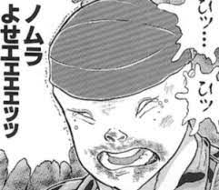
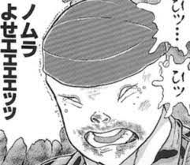
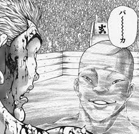

ガイアのホームページようこそ
ガイアは、最強の実戦部隊ガイア隊の司令官兼、二重人格者である。
周囲に存在する物体を利用した、環境利用闘法のマスターでもある。
しかし序盤のシュールすぎるシーンから、立派なコラ画像になってしまった。
そのおかげか勇次郎に並ぶビックネームになっている。
RGBをいじれます
 
右がガイア、左が野村
| 本名 | ガイア／野村 | 使い分ける |
| 二つ名 | ミスターウォーズ | ガイア |
| 必殺技 | 環境利用闘法 | 大地の雷 |
| 勝率 | １勝１敗 | ２試合 |

↑声量兵器をぶちかますガイア。
環境利用闘法のマスター。
かつて刃牙を苦しめたほどの実力を持つ。
実戦で経験を積んでいる他、アドレナリンを自由に操ったり
相手の殺意のある攻撃を見切ったりすることもできる。
さらには精神攻撃もえげつないほどできるので
並みのチャンピオンでは相手にならない。

神心会ホームページへ戻る
１秒後に私は死ぬんだッッッ
| 所属校 | 県立新座総合技術高等学校 |
| 学年 | ３年 |
| 番号 | ３４番 |
| 氏名 | 森田裕生 |